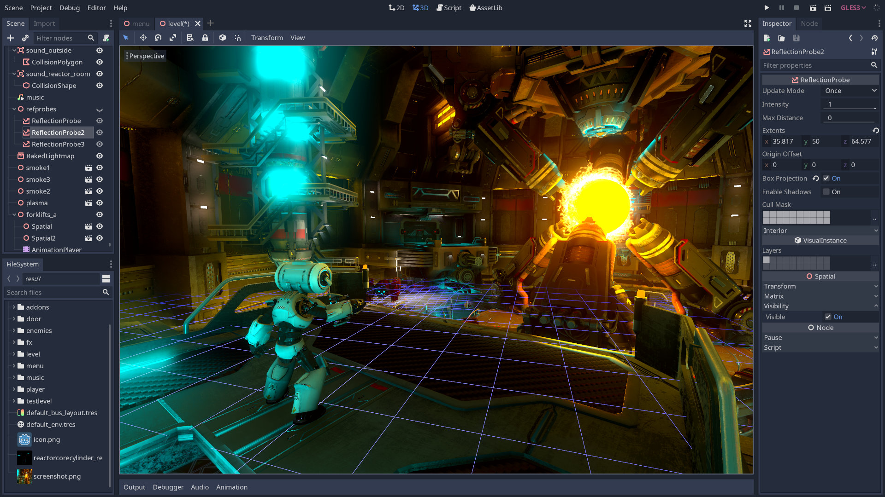

Unreal Engine
Unreal Engine est un moteur de jeu vidéo créé par Epic Games en 1998 et est développé en C++. De nombreux jeux ont été fait avec Unreal Engine, notamment “Borderland(1,2,3)”, “Fortnite”,”ARK Survival Evolved”,”Rocket League”,”Dead by daylight”...


Unity 3D
Unity est un autre moteur de jeu vidéo créé par Unity Technologies en 2005 et est développé en C++ ainsi qu’en C#. De nombreux jeux ont été fait avec Unity, notamment “Among us”, “Rust”,”The Forest”,”Genshin Impact”,”Hearstone”...


Godot Engine
Godot Engine est un moteur de jeu vidéo créé par Juan Linietsky et Ariel Manzur en 2007 et est écrit en C ainsi qu’en C++. De nombreux jeux dont la plupart sont indépendants ont été fait avec Godot Engine, notamment City Game Studios, The Garden Path ou encore Hive Time.
